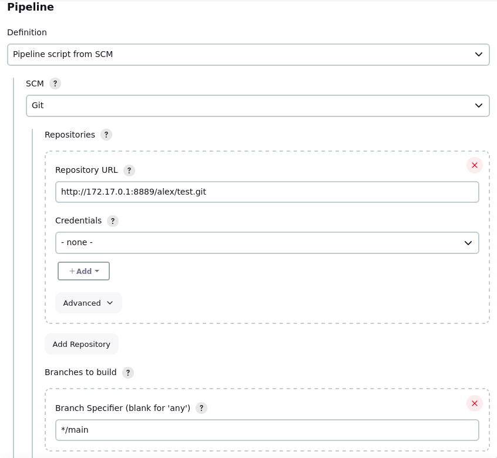
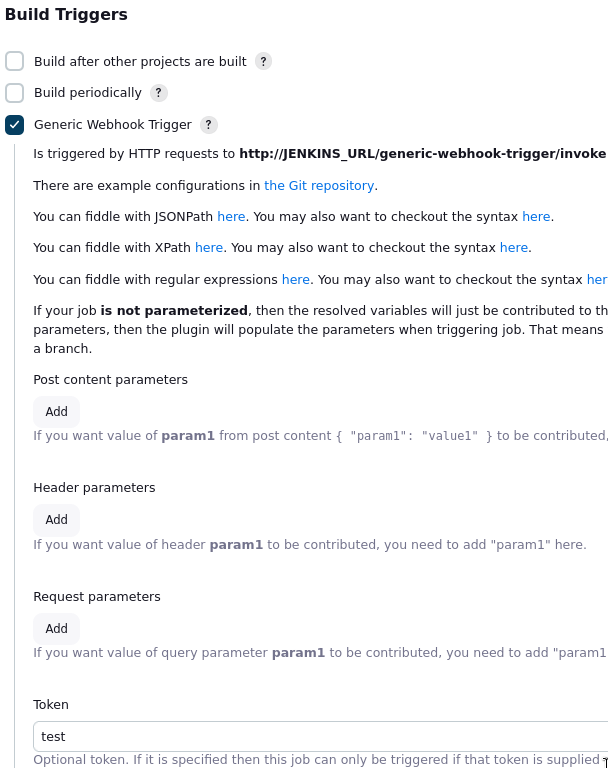
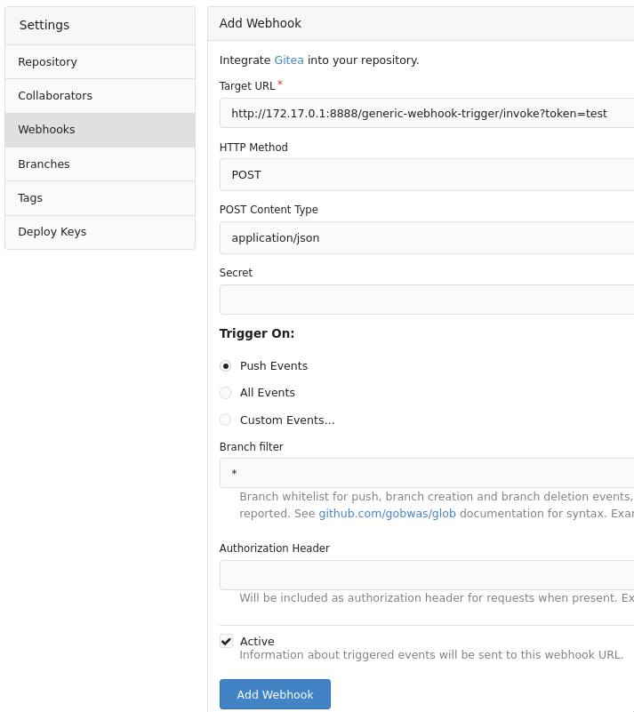

Jenkins
В данном практическом занятии рассмотрим построение CI/CD конвейера аналогичного предыдущему занятию, но с использованием инструмента jenkins.
Vagrant
Для работы будем использовать следующий Vagrantfile:
Vagrant.configure("2") do |config|
config.vm.define "jenkins" do |c|
c.vm.box = "ubuntu/lunar64"
c.vm.provider "virtualbox" do |v|
v.cpus = 2
v.memory = 4096
end
c.vm.hostname = "jenkins"
c.vm.network "forwarded_port", guest: 8888, host: 8888
c.vm.network "forwarded_port", guest: 8889, host: 8889
c.vm.provision "shell", inline: <<-SHELL
apt-get update -q
apt-get install -yq golang-go docker.io
chmod o+rw /var/run/docker.sock
docker run --name gitea -p 8889:3000 -d --restart on-failure \
-e GITEA__security__INSTALL_LOCK=true -e GITEA__webhook__ALLOWED_HOST_LIST=private gitea/gitea
docker run --name jenkins -p 8888:8080 -d --restart on-failure \
-v /var/run/docker.sock:/var/run/docker.sock \
-e JAVA_OPTS=-Djenkins.install.runSetupWizard=false jenkins/jenkins:2.448-jdk17
docker exec jenkins jenkins-plugin-cli --verbose \
-p workflow-aggregator git generic-webhook-trigger
docker exec jenkins sh -c 'cd /var/jenkins_home/ && curl -LO https://go.dev/dl/go1.21.8.linux-amd64.tar.gz && tar xf go1.21.8.linux-amd64.tar.gz'
docker exec jenkins sh -c 'cd /var/jenkins_home/ && curl -LO https://download.docker.com/linux/static/stable/x86_64/docker-25.0.3.tgz && tar xf docker-25.0.3.tgz && mv docker/docker go/bin/'
docker restart jenkins
SHELL
end
end
Данная конфигурация развернет виртуальную машину с контейнерами jenkins localhost:8888 с рядом плагинов и gitea localhost:8889.
New Project
Необходимо создать нового пользователя в gitea
user/sign_up, а после новый репозиторий
repo/create с именем test.
В jenkins создадим пайплайн кликнув New Item или по ссылке
view/all/newjob, выбрав тип Pipeline
и задав имя test.
После чего в появившейся конфигурации в разделе Pipeline
в поле Script слева выберем Hello World и сохраним кнопкой Save.
Запустим сборку нажав Build Now,
чтобы проверить работу пайплайна. После чего результат можно будет увидеть
в панели Build History:
Из которой можно открыть сам билд или его консольный вывод:
Pipeline from SCM
Свяжем наш git проект с пайплайном в jenkins. Для этого опишем код пайплайна
в Jenkinsfile:
pipeline {
agent any
stages {
stage('Hello') {
steps {
echo 'Hello World'
}
}
}
}
И отправим в наш репозиторий:
$ git clone http://localhost:8889/alex/test.git
Cloning into 'test'...
warning: You appear to have cloned an empty repository.
$ cd test/
$ cat <<EOF>Jenkinsfile
> pipeline {
agent any
stages {
stage('Hello') {
steps {
echo 'Hello World'
}
}
}
}
EOF
$ git add Jenkinsfile
$ git commit -m 'init'
[main (root-commit) d2b8ed9] init
1 file changed, 11 insertions(+)
create mode 100644 Jenkinsfile
$ git push
Username for 'http://localhost:8889': alex
Password for 'http://alex@localhost:8889':
Enumerating objects: 3, done.
Counting objects: 100% (3/3), done.
Delta compression using up to 2 threads
Compressing objects: 100% (2/2), done.
Writing objects: 100% (3/3), 276 bytes | 276.00 KiB/s, done.
Total 3 (delta 0), reused 0 (delta 0), pack-reused 0
remote: . Processing 1 references
remote: Processed 1 references in total
To http://localhost:8889/alex/test.git
* [new branch] main -> main
Теперь сконфигурируем наш пайплайн в jenkins, задав тип
Pipeline script from SCM, указав систему контроля версий - git,
в качестве адреса - адрес докер интерфейса и путь к репозиторию
http://172.17.0.1:8889/alex/test.git, а также ветку */main.

После чего можно повторно запустить сборку и посмотреть результат:
Webhook
Запускать сборку каждый раз вручную не очень удобно,
сделаем триггер для запуска сборки через webhook,
который будет реагировать на события пуша в гит репозиторий.
В jenkins в конфигурации пайплайна
в разделе Build Triggers выберем Generic Webhook Trigger,
где в появившейся конфигурации определим токен,
который будет идентифицировать наш пайплайн, например test.

В gitea в Settings проекта в разделе Webhooks создадим новый хук кнопкой
Add Webhook и выберем тип Gitea.
В конфигурации заполним адрес хука:
http://172.17.0.1:8888/generic-webhook-trigger/invoke?token=test

После создания хука можно открыть в него и сделать тестовый запуск кнопкой
Test Delivery.
В jenkins же увидим запущенный билд, в котором будет указано, что запуск был
инициирован плагином generic webhook.

Теперь попробуем запустить триггер пушем в репозиторий, для этого добавим
новый файл go.mod:
$ go mod init test
go: creating new go.mod: module test
$ git add go.mod
$ git commit -m 'add go.mod'
[main 27891cc] add go.mod
1 file changed, 3 insertions(+)
create mode 100644 go.mod
$ git push
Username for 'http://localhost:8889': alex
Password for 'http://alex@localhost:8889':
Enumerating objects: 4, done.
Counting objects: 100% (4/4), done.
Delta compression using up to 2 threads
Compressing objects: 100% (2/2), done.
Writing objects: 100% (3/3), 286 bytes | 286.00 KiB/s, done.
Total 3 (delta 0), reused 0 (delta 0), pack-reused 0
remote: . Processing 1 references
remote: Processed 1 references in total
To http://localhost:8889/alex/test.git
d2b8ed9..27891cc main -> main
После чего в jenkins запустится сборка, а также видно какие изменения произошли в репозитории.
Test Stage
Наконец добавим код приложения main.go и тесты к нему main_test.go,
чтобы запускать при каждом пуше.
package main
import (
"log"
"net/http"
)
func Handler(w http.ResponseWriter, r *http.Request) {
w.WriteHeader(http.StatusOK)
w.Write([]byte("Hello!\n"))
}
func main() {
if err := http.ListenAndServe("0.0.0.0:8080", http.HandlerFunc(Handler));err != nil {
log.Fatal(err)
}
}
package main
import (
"net/http"
"net/http/httptest"
"testing"
)
func TestHandler(t *testing.T) {
req, err := http.NewRequest("GET", "/", nil)
if err != nil {
t.Fatal(err)
}
rec := httptest.NewRecorder()
http.HandlerFunc(Handler).ServeHTTP(rec, req)
if rec.Code != http.StatusOK {
t.Errorf(
"wrong status code: want %v got %v",
http.StatusOK, rec.Code,
)
}
if rec.Body.String() != "Hello!\n" {
t.Errorf("wrong body: got %s", rec.Body.String())
}
}
А также изменим Jenkinsfile:
pipeline {
agent any
environment {
PATH = "/var/jenkins_home/go/bin:${env.PATH}"
}
stages {
stage('test') {
steps {
sh 'go test'
}
}
}
}
В jenkins запустится новая сборка со следующим результатом:

Build Stage
Добавим сборку приложения новым шагом.
pipeline {
agent any
environment {
PATH = "/var/jenkins_home/go/bin:${env.PATH}"
}
stages {
stage('test') {
steps {
sh 'go test'
}
}
stage('build') {
steps {
sh 'go build'
}
}
}
}
После пуша появится новая сборка:
Для деплоя нам будет удобнее работать с docker образами, так что изменим сборку:
pipeline {
agent any
environment {
PATH = "/var/jenkins_home/go/bin:${env.PATH}"
}
stages {
stage('test') {
steps {
sh 'go test'
}
}
stage('build') {
steps {
sh 'docker build -t test:$(git rev-parse --short HEAD) .'
}
}
}
}
А также добавим Dockerfile:
FROM golang:1.22-alpine as builder
WORKDIR /usr/src
COPY . .
RUN go build -o /usr/src/app
FROM scratch
COPY --from=builder /usr/src/app /app
CMD ["/app"]
После отправки в репозиторий в jenkins запустится новый билд, в котором соберется docker образ:

И на нашей виртуальной машине появится новый образ:
$ docker images test
REPOSITORY TAG IMAGE ID CREATED SIZE
test 1e2775f 4311123c6ee4 5 minutes ago 6.95MB
Deploy stage
В конечном итоге нам необходимо произвести деплой образа, для этого добавим
стадию deploy в наш пайплайн:
pipeline {
agent any
environment {
PATH = "/var/jenkins_home/go/bin:${env.PATH}"
}
stages {
stage('test') {
steps {
sh 'go test'
}
}
stage('build') {
steps {
sh 'docker build -t test:$(git rev-parse --short HEAD) .'
}
}
stage('deploy') {
steps {
sh 'docker rm -f test'
sh 'docker run -p 9000:8080 -d --name test test:$(git rev-parse --short HEAD)'
}
}
}
}
После очередного пуша в результате сборки увидим, что контейнер запустился:
$ docker ps
CONTAINER ID IMAGE COMMAND CREATED STATUS PORTS NAMES
59586e5d8983 test:c70828c "/app" 18 seconds ago Up 17 seconds 0.0.0.0:9000->8080/tcp, :::9000->8080/tcp test
$ curl localhost:9000
Hello!